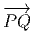
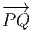

![|-----------------|
|v[f] = vi-∂if(x) |
----------∂x------](source4x.png)
Avant de donner une définition générale des vecteurs et champs de vecteurs, définition qui pourrait sembler assez abstraite de prime abord, nous souhaitons motiver quelque peu cette définition. Le lecteur est déjà supposé être familier de la notion élémentaire de vecteur, à savoir une classe d’équivalence de bi-points parallèles et de même sens, dans l’espace affine I Rn. Un champ de vecteurs de I Rn, au sens élémentaire du terme, est donc une application qui, à tout point de I Rn – considéré comme espace affine – associe un vecteur de I Rn –considéré comme espace vectoriel. Intuitivement, on a une “flèche” en tout point ; on peut penser à l’exemple du champ des vitesses d’un solide en mouvement, mais on peut aussi penser au champ magnétique en tout point de l’espace, etc. En physique – mais aussi, comme nous allons le voir, en mathématiques – un vecteur peut être considéré comme un “petit déplacement”. Soit M une variété différentiable, f une fonction différentiable ainsi que P et Q deux points de M. Si M était un espace affine (comme I Rn), cela aurait un sens de considérer la différence de Q et de P, puisque cette différence définirait simplement le vecteur  = Q - P. On pourrait aussi (mais on peut de toutes façons) considérer la différence f(Q) - f(P) des valeurs prises par f en Q et P. Dans le cas de M = I Rn et lorsque Q (coordonnées x′) tend vers P (coordonnées x), le théorème des accroissement finis (ou celui de Taylor) nous dit que 1 f(x′) - f(x) = (x′- x)i∂∕∂xif(x) + … = vi∂∕∂xif(x) + … où les nombres vi = (x′-x)i ne sont autres que les composantes du vecteur  = Q-P dans le repère où P et Q ont des composantes xi et x′i. Dans le cas des variétés, l’expression (x′- x)i∂∕∂xif(x) a encore un sens. En effet, choisissons tout d’abord une carte, et notons v la quantité v = vi∂∕∂xi. Si x(P) sont les coordonnées de P dans le domaine de la carte x, on pourra considérer la quantité
Dans le cas des variétés, il est clair que les vecteurs ne peuvent pas être définis comme des bi-points (ou des classes d’équivalences de bi-points), par contre, rien ne nous empêche d’utiliser leur propriété de machine-à-fabriquer-des-dérivées-partielles pour les définir de façon générale. Dans le domaine d’une carte x, un champ de vecteurs sera donc défini comme un opérateur de différentiation d’ordre 1 à savoir
L’opérateur différentiel d’ordre 1 noté v = vi∂∕∂xi est un champ de vecteurs car les vi sont des fonctions sur M alors que v(P) = vi(P)∂∕∂xi est un vecteur au point P, de composantes vi(P).
En géométrie élémentaire des courbes, la tangente en P à une courbe
(différentiable) est définie comme limite des sécantes PQ lorsque Q tends vers
P ; cela signifie que les vecteurs  tendent vers un vecteur tangent à la courbe.
En géométrie des variétés différentiables, on pourrait faire de même, à
condition de plonger notre variété (par exemple la sphère usuelle S2) dans
un espace plus grand (par exemple I R3) et voir ainsi, un vecteur de S2
comme un vecteur tangent à la sphère (et donc “sortant” de celle-ci) ; mais
une telle contrainte serait précisément contraire à l’idée même du calcul
intrinsèque sur les variétés, calcul qui se veut, justement, indépendant de
l’existence de plongements possibles. La définition adoptée précédemment est
bien indépendante de la présence d’un espace affine ambiant, mais il est
néanmoins commode, pour l’intuition, de visualiser nos vecteurs de façon
élémentaire et d’adopter une terminologie qui nous rappelle des situations bien
connues. Pour ces raisons, un vecteur de la variété M en un point P est
souvent appelé vecteur tangent en P, l’ensemble de ces vecteurs se note
T(M,P) ou encore TP M et est désigné sous le nom de espace tangent à
M en P ; on a donc un espace tangent en chaque point de la variété.
L’ensemble des vecteurs eux-mêmes (tous les vecteurs), se note T(M) ou
simplement TM et est appelé l’espace tangent à M ou encore, pour une
raison qu’on expliquera ultérieurement le fibré tangent à M (“tangent
bundle”). Un élément de TM est donc la donnée (P,u) d’un point de M et
d’un vecteur en ce point. Attention, il faut bien distinguer les notions
de vecteur en un point et de champs de vecteurs (mais nous allons très
souvent oublier cette distinction). L’ensemble des champs de vecteurs se
note ΓTM. Notons que cet espace est un espace vectoriel (de dimension
infinie), et T(M,P) est un espace vectoriel de dimension n (supposant que
M est elle-même de dimension n), alors que TM n’est pas un espace
vectoriel du tout (on ne peut pas additionner un vecteur en P avec un
vecteur en Q !). On verra que TM, que l’on peut considérer comme une
collection d’espaces vectoriels paramètrisés par les points de M, possède la
structure d’espace fibré vectoriel (cette structure sera définie et étudiée plus
loin). Notons que l’espace TM est lui-même une variété différentiable.
Supposons que M soit une variété de dimension n, un point P de M est en
effet caractérisé (dans une certaine carte) par n composantes xμ et un
“point” (c’est à dire un élément) de TM consistera en la donnée d’un
couple (P,u) ∈ M × T(M,P) c’est à dire 2n nombres (n nombres xμ et n
composantes du vecteur u dans une base choisie de l’espace vectoriel T(M,P).
Ainsi TM est une variété de dimension 2n. Intuitivement, on peut se
représenter par exemple TS2 comme la donnée d’une infinité de plans
tangents collés à la sphère ; il s’agit, dans ce cas d’une variété de dimension
4.
tendent vers un vecteur tangent à la courbe.
En géométrie des variétés différentiables, on pourrait faire de même, à
condition de plonger notre variété (par exemple la sphère usuelle S2) dans
un espace plus grand (par exemple I R3) et voir ainsi, un vecteur de S2
comme un vecteur tangent à la sphère (et donc “sortant” de celle-ci) ; mais
une telle contrainte serait précisément contraire à l’idée même du calcul
intrinsèque sur les variétés, calcul qui se veut, justement, indépendant de
l’existence de plongements possibles. La définition adoptée précédemment est
bien indépendante de la présence d’un espace affine ambiant, mais il est
néanmoins commode, pour l’intuition, de visualiser nos vecteurs de façon
élémentaire et d’adopter une terminologie qui nous rappelle des situations bien
connues. Pour ces raisons, un vecteur de la variété M en un point P est
souvent appelé vecteur tangent en P, l’ensemble de ces vecteurs se note
T(M,P) ou encore TP M et est désigné sous le nom de espace tangent à
M en P ; on a donc un espace tangent en chaque point de la variété.
L’ensemble des vecteurs eux-mêmes (tous les vecteurs), se note T(M) ou
simplement TM et est appelé l’espace tangent à M ou encore, pour une
raison qu’on expliquera ultérieurement le fibré tangent à M (“tangent
bundle”). Un élément de TM est donc la donnée (P,u) d’un point de M et
d’un vecteur en ce point. Attention, il faut bien distinguer les notions
de vecteur en un point et de champs de vecteurs (mais nous allons très
souvent oublier cette distinction). L’ensemble des champs de vecteurs se
note ΓTM. Notons que cet espace est un espace vectoriel (de dimension
infinie), et T(M,P) est un espace vectoriel de dimension n (supposant que
M est elle-même de dimension n), alors que TM n’est pas un espace
vectoriel du tout (on ne peut pas additionner un vecteur en P avec un
vecteur en Q !). On verra que TM, que l’on peut considérer comme une
collection d’espaces vectoriels paramètrisés par les points de M, possède la
structure d’espace fibré vectoriel (cette structure sera définie et étudiée plus
loin). Notons que l’espace TM est lui-même une variété différentiable.
Supposons que M soit une variété de dimension n, un point P de M est en
effet caractérisé (dans une certaine carte) par n composantes xμ et un
“point” (c’est à dire un élément) de TM consistera en la donnée d’un
couple (P,u) ∈ M × T(M,P) c’est à dire 2n nombres (n nombres xμ et n
composantes du vecteur u dans une base choisie de l’espace vectoriel T(M,P).
Ainsi TM est une variété de dimension 2n. Intuitivement, on peut se
représenter par exemple TS2 comme la donnée d’une infinité de plans
tangents collés à la sphère ; il s’agit, dans ce cas d’une variété de dimension
4.
Soit v un champ de vecteurs. Il pourra donc s’écrire localement (c’est à dire dans une certaine carte) v = vμ∂∕∂xμ. Si f et g désignent deux fonctions sur M, il est clair que
![-∂-- --∂- --∂-
∂xμ[fg ] = ∂x μ[f]g + f∂x μ[g]](source7x.png)
![|---------------------|
|v[fg] = v[f ]g + f v[g ]|
----------------------](source8x.png)
Notons que le produit de deux vecteurs n’est pas un vecteur (produit défini par composition de l’action des vecteurs sur les fonctions) mais un opérateur différentiel d’ordre 2. En effet, soient v = vμ∂∕∂xμ et w = wν∂∕∂xν deux champs de vecteurs (attention les vμ est les wν n’ont aucune raison d’être constants dans la carte choisie). Alors, (vw)[f] = v[w[f]] = v[wν∂∕∂xν[f]] = vμ∂∕∂xμ[wν∂∕∂xν[f]] = vμ∂∕∂xμ[wν]∂∕∂xν[f]+vμwν∂2∕∂xμ∂xν[f] Par contre, le commutateur (notation crochet) de deux champs de vecteurs, défini par
![|-----------------|
|[v, w] = vw - wv |
------------------](source9x.png)
![[v, w][f ] = (vw )[f] - (wv )[f] = (v μ-∂-[w ν]-∂-- wμ--∂-[vν]-∂--)[f ]
∂xμ ∂xν ∂x μ ∂x ν](source10x.png)
Antisymétrie
![|---------------|
-[u,v] =-- [v,u]|](source11x.png)
![|-----------------------------------|
[u,[v,w ]] + [v,[w, u]] + [w,[u,v]] = 0
-------------------------------------](source12x.png)
On appelle repère sur U ⊂ M, la donnée, en chaque point P ∈ U, d’une base de l’espace vectoriel tangent en P. Un repère est en général “local”, c’est à dire qu’on n’essaye pas, ou qu’on ne peut pas choisir U = M. Si xμ(P) désignent les composantes de P dans une carte locale (U,x), on a déjà vu que des vecteurs quelconques en P ou dans un voisinage de P peuvent se décomposer sur les vecteurs ∂∕∂xμ. En d’autres termes, l’ensemble des

Soit P ∈ M → y(P) ∈ I Rn un nouveau système de coordonnées. Si x désigne
l’ancien système, on notera également y : I Rn I Rn les fonctions de changement
de carte, on écrira donc y(P) = y(x(P)). Le repère naturel associé aux
coordonnées x est eμ = {∂∕∂xμ}, celui associé aux coordonnées y est
eμ′ = {∂∕∂yμ}. Nous savons (depuis le secondaire) comment calculer la dérivée
d’une fonction composée, et donc
I Rn les fonctions de changement
de carte, on écrira donc y(P) = y(x(P)). Le repère naturel associé aux
coordonnées x est eμ = {∂∕∂xμ}, celui associé aux coordonnées y est
eμ′ = {∂∕∂yμ}. Nous savons (depuis le secondaire) comment calculer la dérivée
d’une fonction composée, et donc

Il est souvent commode de noter tout simplement ∂μ les vecteurs du repère naturel {eμ = ∂∕∂xμ} associés à la carte xμ. La décomposition d’un vecteur quelconque v suivant ce repère s’écrit v = vμ∂ μ, où les vμ sont des nombres réels.
Dans un espace vectoriel, nous savons que les changements de base sont décrits par des matrices “de passage” qui ne sont autres que des matrices inversibles Λαμ quelconques. En géométrie différentielle, nous pouvons bien entendu faire de même, à ceci près que la matrice Λαμ peut maintenant dépendre du point de la variété. En d’autres termes, on a des matrices de passage dont les éléments sont des fonctions sur la variété. Supposons que nous nous trouvons dans le domaine d’une carte et que {∂μ} désigne le repère naturel associé. Ce repère, au point P, constitue une base de l’espace tangent en P. Mais rien ne nous empêche de choisir une autre base au même point. Si Λαμ désigne une matrice inversible en P, alors la famille de vecteurs {eα = Λαμ∂ μ} est une autre base de l’espace tangent TpM, c’est à dire un repère au point P. Un tel repère est couramment désigné sous le nom de repère mobile. Notons qu’il n’y a aucune raison, a priori, pour que ce repère coïncide avec le repère naturellement associé à une autre carte que celle des xμ ; pour que cela soit le cas, il faudrait qu’on puisse trouver une solution locale yα au système d’équations ∂yα∕∂xμ = (Λ-1) μα) où Λ-1 désigne la matrice inverse de la matrice Λ. Le théorème garantissant l’existence de solutions pour une équation différentielle aux dérivées partielles nous assure seulement l’existence d’une telle solution yμ(xν)) le long d’une ligne, mais pas dans un voisinage ouvert de la variété.
Soit {eα} un repère mobile. Nous avons déjà vu que le crochet (commutateur) de deux champs de vecteurs est un champ de vecteurs. En particulier [eα,eβ] est un champ de vecteurs qui, évalué au point P, appartient à l’espace tangent en ce point et peut donc se décomposer sur une base de l’espace tangent en P. On écrira donc
 = f αβ(P )eγ(P )](source18x.png)
![|----------γ----|
-[eα,eβ-] =-fαβeγ-](source19x.png)
Par ailleurs, on posera souvent ∂α = eα même s’il n’existe pas de système de coordonnées {yα} tel que ∂ α soit le repère naturel associé. Le lecteur doit donc se méfier de cet abus d’écriture pourtant commode : il est des cas où ∂α et ∂β ne commutent pas !